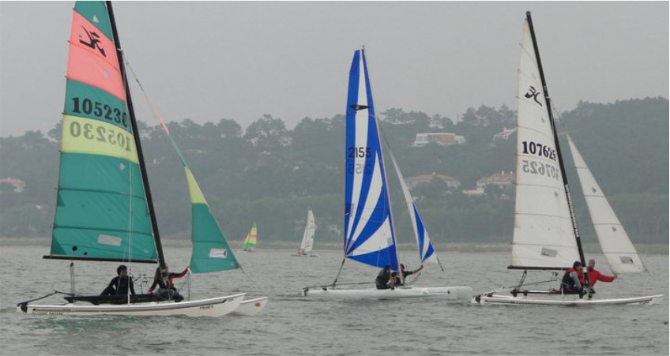
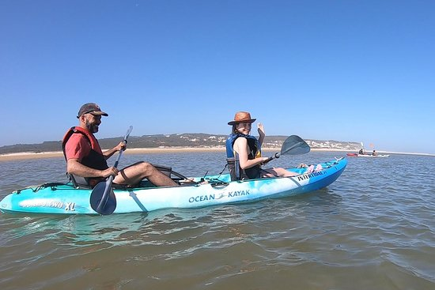
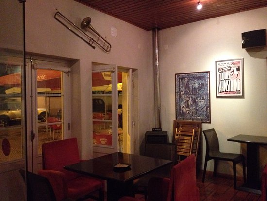

Além de apanhar banhos de sol na agradável praia da Foz do Arelho, há muito mais para fazer.
Escola de Vela da Lagoa
Situada na margem Norte da Lagoa de Óbidos, entre as vilas da Foz do Arelho e do Nadadouro, a Escola de Vela da Lagoa dedica-se desde 1997 ao ensino e à prática da vela em diversas modalidades : Windsurf, Catamaran, Kitesurf, Optimist, Paddleboard, canoagem e ainda ski náutico e wakeboard.
Integrada numa paisagem de rara beleza, apoiada por um excelente espelho de água, a EVL tem iniciado e apoiado centenas de praticantes da modalidade, permitindo-lhes disfrutar de óptimas condições de vento, com toda a segurança.
Integrada numa paisagem de rara beleza, apoiada por um excelente espelho de água, a EVL tem iniciado e apoiado centenas de praticantes da modalidade, permitindo-lhes disfrutar de óptimas condições de vento, com toda a segurança.

Intertidal - Natureza e Aventura
A Intertidal - Natureza e Aventura fornece eco-turismo e turismo natural com uma componente científica, histórica, cultural, etnográfica e ambiental.

Trombone Jazz Bar
Com a melhor seleção de música e menu, o "Trombone Jazz Bar" oferece um espaço de qualidade, com uma fantástica variedade de jazz e blues.
Aqui pode encontrar um espaço para relaxar, falar com amigos e fugir do mundo exterior nesta experiência imersiva.
Aqui pode encontrar um espaço para relaxar, falar com amigos e fugir do mundo exterior nesta experiência imersiva.
